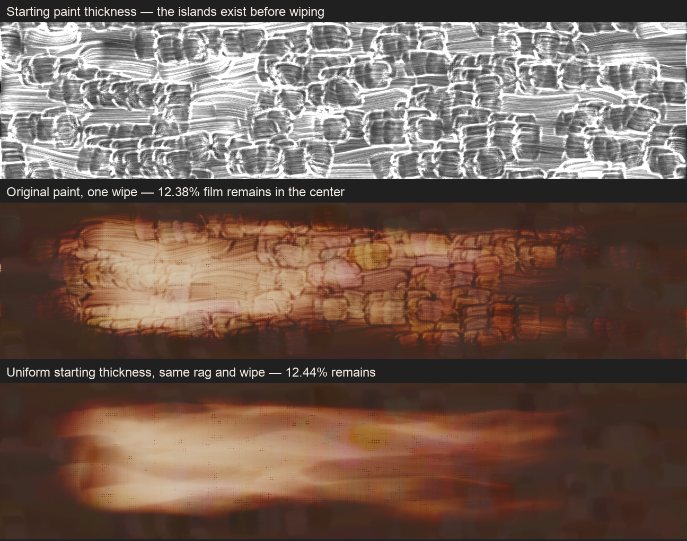
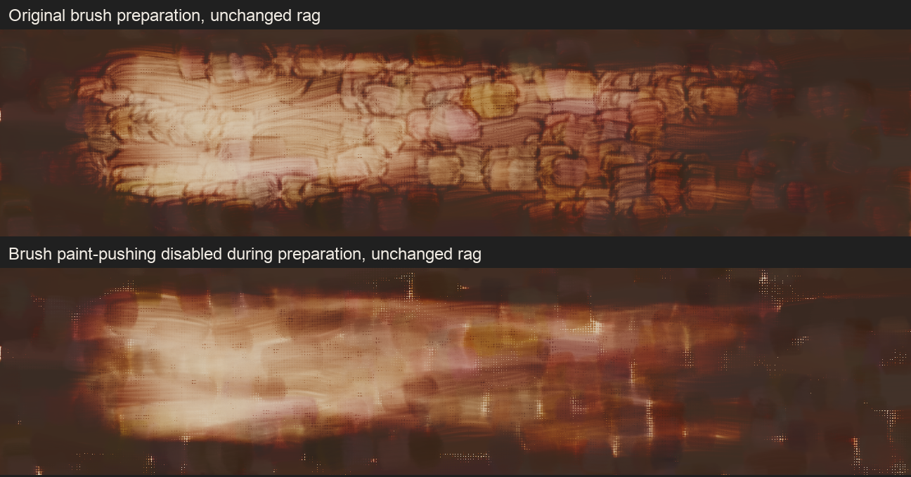
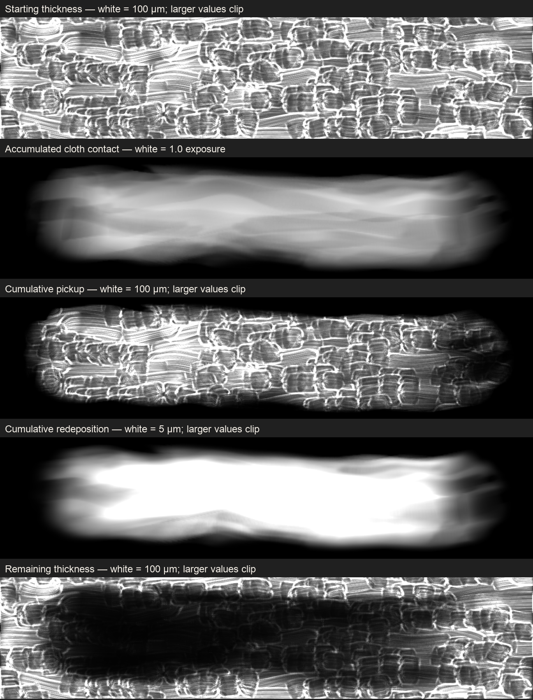
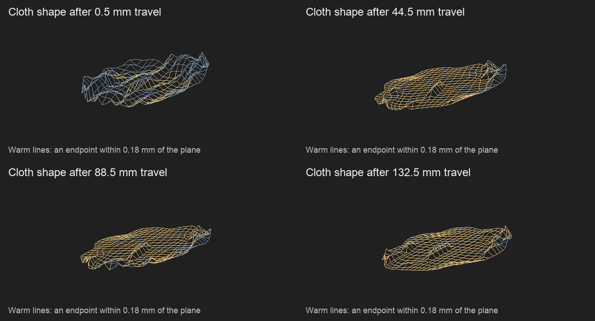

The repeated outlines are raised brush marks in the starting layer. The wipe makes them visible. With the same cloth and wipe, a uniform starting thickness loses the islands while retaining nearly the same amount of paint.

The cloth-contact hypothesis did not survive the controls. The three runs below have identical accumulated contact maps. Changing the starting thickness removes the islands. Disabling only the brush’s paint-pushing step during preparation also removes the repeated outlines. The rag itself is unchanged.
| Starting layer | Mean starting thickness | Mean thickness after wiping | Film remaining |
|---|---|---|---|
| Original brush preparation | 69.29 µm | 8.58 µm | 12.38% |
| Uniform-thickness control | 69.29 µm | 8.62 µm | 12.44% |
| Brush paint-pushing disabled | 70.39 µm | 8.75 µm | 12.43% |
Measurements use the same central band, x = 350–650 and y = 310–370 canvas units. Exact measurements · Replay and contact checks.
This identifies where the pattern comes from. It does not establish that disabling paint-pushing is a correct brush model, that a uniform layer represents every painting or that the rag is physically calibrated. No cloth rewrite or production brush fix was retained.


These fields were recorded during the same wipe, with no changes to its arithmetic. The resulting paint image matches the earlier quarter-rate image pixel for pixel. Starting thickness − cumulative pickup + cumulative redeposition reconstructs the remaining film with a maximum per-pixel error of 0.00035 µm. Accounting check.
Paint can be picked up and deposited more than once, so the cumulative maps are not final deposited layers. The separate unclipped redeposition view reveals its structure without saturating bright areas.

The starting film’s thickness now appears beside the wipe. The uniform layer isolates rag behavior; the original brush layer remains as a separate textured-paint case. This prevents a brush-preparation artifact from being treated as a cloth defect.
An experimental change that deferred brush transfers until the end of each bristle step did not remove the outlines and was reverted. Result. Changing the order of transport was insufficient; there is no validated production correction to brush displacement from this round.
Unapplied research patch against main 4e525e5 includes the previous cloth prototype and temporary recording code, not a release candidate. Render source · Recording and uniform-thickness control · Figure source.
Images: original wipe · uniform control · brush-pushing control · original starting color · original starting thickness.
Development iteration profile; diagnostic checks only. These comparisons provide causal evidence about the artifact, not physical calibration or release validation. Shipping source was restored.